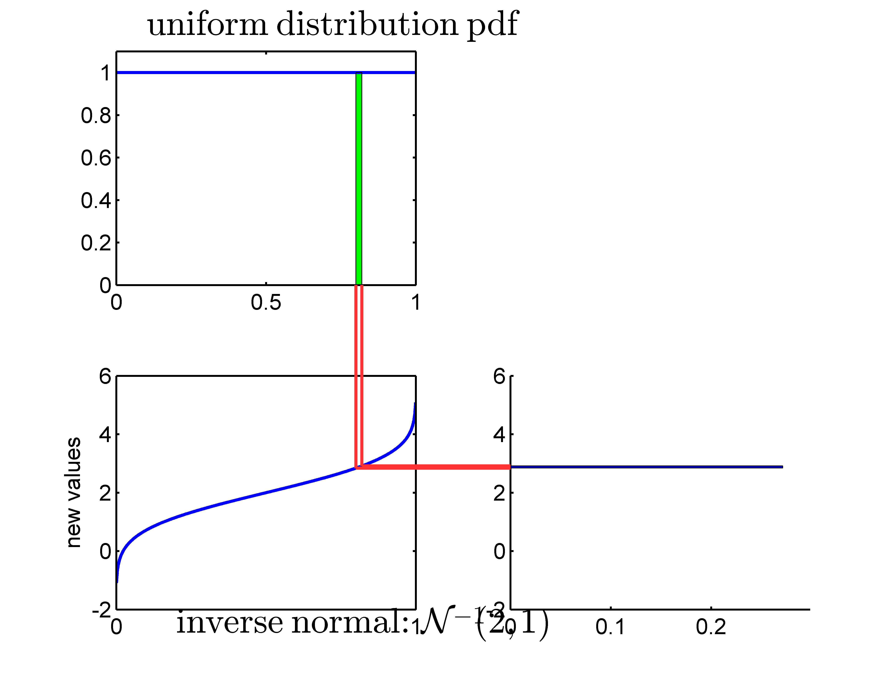
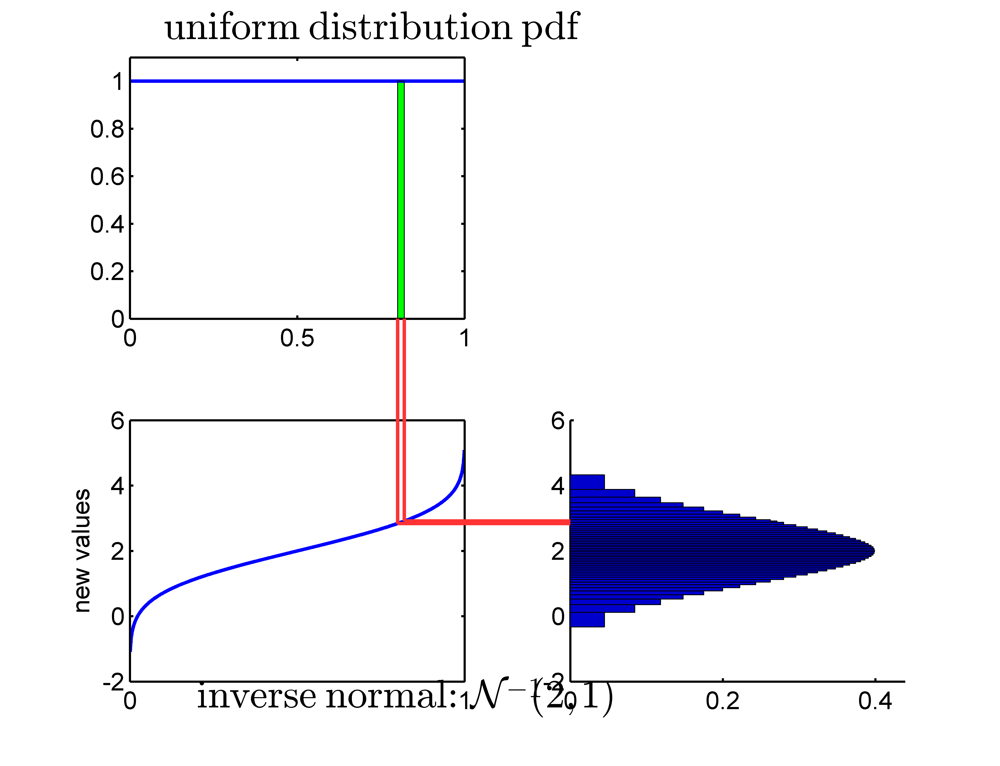
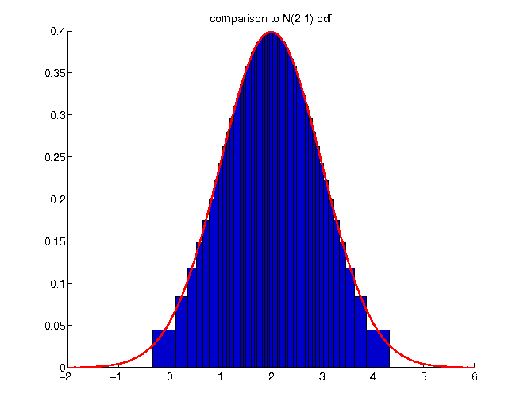

Let X be a random variable with density function f(x), and g(x) be an invertible bijective function. Then the density function of the transformed random variableY = g(X) in any point z is given by
given that we can calculate some measure $\varrho_{X}$ of the original random variable X, it is not ensured that $\varrho_{Y}$ can be calculated for the new random variable Y, too: e.g. if $\varrho$ envolves integration
what about non-invertible functions?
Example: return distribution
traditional financial modeling: normally distributed logarithmic returns
although only visable under magnification, there is a difference between a normal distribution which is directly fitted to net returns and the distribution which arises for net returns by fitting a normal distribution to logarithmic returns
the resulting distribution from fitting a normal distribution to logarithmic returns assigns more probability to extreme negative returns as well as less probability to extreme positive returns
Example: inverse normal distribution
application of an inverse normal cumulative distribution as transformation function to a uniformly distributed random variable



the resulting distribution really is the normal distribution
application of an inverse cdf to a uniformly distributed random variable forms the basis of Monte Carlo simulation
Monte Carlo simulation
Let X be a univariate random variable with distribution function FX. Let FX − 1 be the quantile function of FX, i.e.
calculation of mean and variance of a linearly transformed variable neither requires detailed information about the distribution of the original random variable, nor about the distribution of the transformed random variable
knowledge of the respective values of the original distribution is sufficient
for non-linear transformations, such simple formulas do not exist
most situations require simulation of the transformed random variable and subsequent calculation of the sample value of a given measure